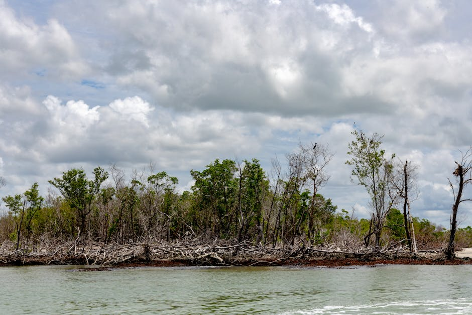

Indigenous Knowledge Meets AI: Ethical monitoring of climate stress and biodiversity: sounds of elephants and Katip (Ltome-Katip) in Kenya and the Ecuadorian Amazon

The Ltome-Katip datasets are the first Indigenous-labelled bioacoustic datasets designed specifically to support the development of ethical AI for biodiversity monitoring. Co-created by Indigenous data stewards from the Samburu tribe in northern Kenya and the Shuar Nation in the Ecuadorian Amazon, the recordings focus on two sentinel species: Ltome (elephant) and Katip (rodent), both of which signal ecological shifts under climate stress. All data were collected, annotated, and governed by the Indigenous communities, following locally defined protocols rooted in Indigenous data sovereignty. These datasets are not only scientifically valuable — they establish a precedent for how Indigenous communities can lead in setting standards for responsible, consent-based AI development.
Data characteristics
Ltome-Katip Indigenous Bioacoustic Dataset
Regions: Samburu (Kenya) · Shuar (Ecuadorian Amazon)
Custodians: Chief Titus Letaapo (Samburu tribe) (Namunyak Conservancy), Chief Mario Vargas Shakaim (Shuar Nation) (MUSAP Biological Station), and Space4Innovation
This dataset contains Indigenous-labelled bioacoustic recordings from two ecosystems—semi-arid savannah and tropical rainforest—collected through AudioMoth bioacustic sensors. Data include species-specific sounds (e.g., elephants, rodents), environmental background, and associated metadata following the CARE Principles for Indigenous Data Governance.
Use cases: biodiversity monitoring, species classification, human–wildlife conflict alerts, and AI model training for conservation.
Limitations: class imbalance (key species overrepresented), environmental noise, and spatial clustering; users should apply noise filtering and ethical review before reuse. These audio data are collected 24/7 when deployed in time periods ranging from hours to several weeks. The data are acquired from multiple microphones spread across the study site. Each microphone has a unique serial number and the geographic locations are provided using GPS. The data are time stamped, however there are data gaps in time and space due to logistics, equipment failure, or power loss. The original data are stored as 16-bit WAV files and are available. To make the data more widely available, they have been uploaded to the Arbimon.org platform. The Arbimon cloud platform is built for bioacoustics analysis using various ML .
Model characteristics
The Ltome-Katip system uses Indigenous-labelled bioacoustic data to train AI models that detect and classify species like elephants in Samburu (Kenya) and rodents in the Ecuadorian Amazon. These models are already being used to monitor biodiversity, understand ecological stress, and support early warning systems rooted in Indigenous governance. What sets Ltome-Katip apart is that both the dataset and its governance model were co-designed by Indigenous communities. All development follows the CARE Principles for Indigenous Data Sovereignty, and any replication must go through an Ethical AI Assessment to ensure consent, transparency, and benefit-sharing. This project sets a new global benchmark for community-led, responsible AI in biodiversity and conservation.
The data is processed using the Arbimon platform, where recordings are visualized as spectrograms and labelled through bounding boxes by trained Indigenous data stewards. The outputs — including geospatial and temporal metadata — can be downloaded as CSV files and used for further machine learning or integration with other ecological datasets. These tools are already generating insights into ecosystem change and human–wildlife conflict. The core team is now actively designing Ltome-Katip 2, a next-phase expansion that will deepen Indigenous-led data infrastructure, extend sensor coverage, and explore AI integration with the Namunyak app. While plans are in development, we are currently seeking aligned funding to support this work, which will remain entirely Indigenous-led and ethically governed at every stage.
How to use
The Ltome-Katip datasets can already be used to detect and classify species such as elephants and rodents, enabling real-time biodiversity monitoring and alerts for human–wildlife conflict. They also support ecosystem health assessments by capturing patterns in species richness, activity cycles, and climate-driven changes. Indigenous-led early warning systems are already being built using these datasets and dashboards, allowing communities to visualize and act on local ecological shifts. Researchers can extend this work by adding new species, integrating satellite data, applying transfer learning, or developing explainable AI tools to improve accuracy and cross-ecosystem usability. All reuse must respect Indigenous data sovereignty, undergo an ethical AI review, and credit the original communities. The Ltome-Katip core team is actively seeking funding for the next phase — Ltome-Katip 2 — which will expand the sensor network, strengthen community data infrastructure, and integrate AI capabilities into the Namunyak Indigenous app.
Datasets
Use cases
Additional resources
- When Future Already Here Now Its Being Filmed Diana Mastracci Sanchez Y5Rue (linkedin.com)
- Embracing Uncertainty Hidden Strength Science Diana Mastracci Sanchez Qdj5E (linkedin.com)
- Bridging Worlds Indigenous Led Innovation Remote Mastracci Sanchez Yjqfe (linkedin.com)
- Ltome Katip Indigenous Led Labelling Inclusive Ai Addressing Human Wildlife Conflict And (rit.edu)
- Professor Helps Bring Machine Learning Indigenous Communities (rit.edu)
About
Powered by / Provided by: Space4Innovation, Namunyak Conservancy, GEO Indigenous Alliance, MUSAP & Rochester Institute for Technology
Catalyzed by: Lacuna-Fund / Meridian (Climate-call) & FAIR Forward - AI for All, GIZ
Financed by: BMZ
Authors: Diana Mastracci, Space4Innovation, GEO Indigenous Alliance
Contact: Space4Innovation, Diana Mastracci (diana@space4innovation.com)